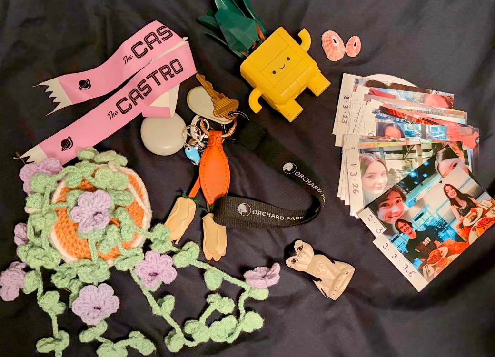
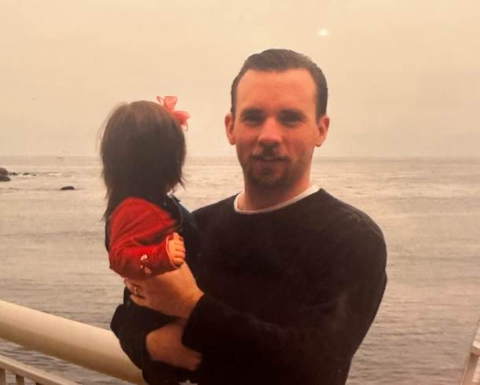
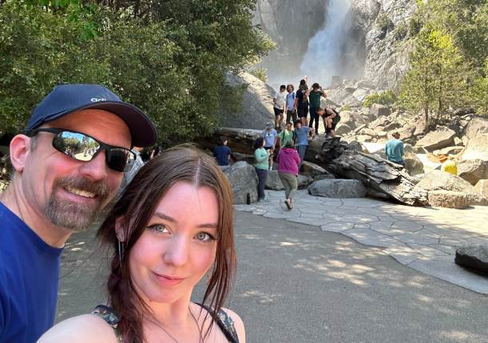

Ceramic Cat




This object represents my love for my cats, and also this cat reminds me of my dad and the memories we share.
Click through the objects found around or in my desk to uncover small stories, memories, and pieces of me through images!



This object represents my love for my cats, and also this cat reminds me of my dad and the memories we share.